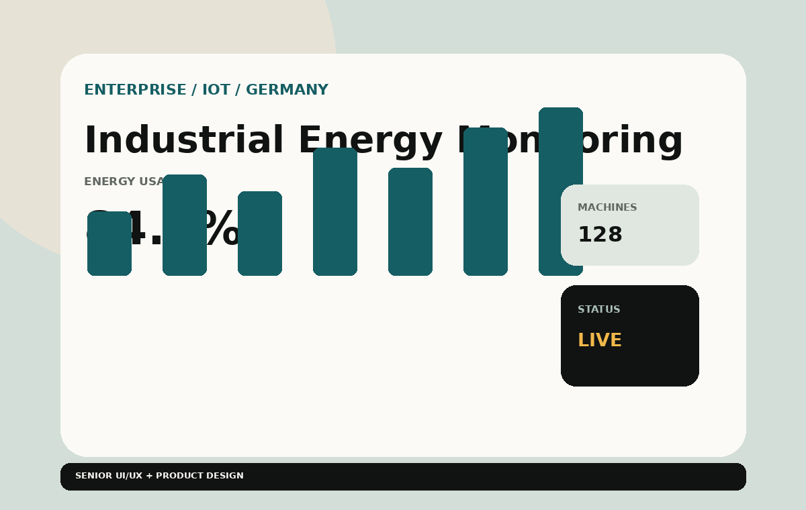
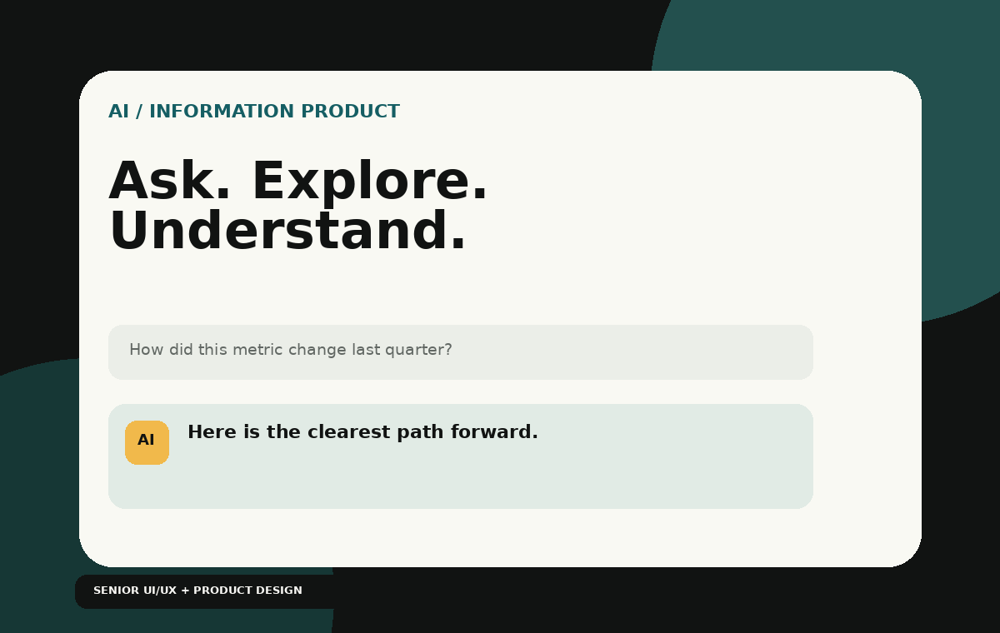
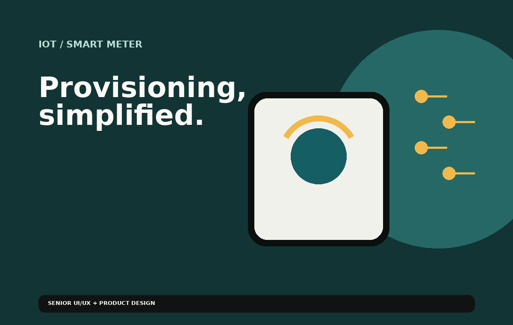
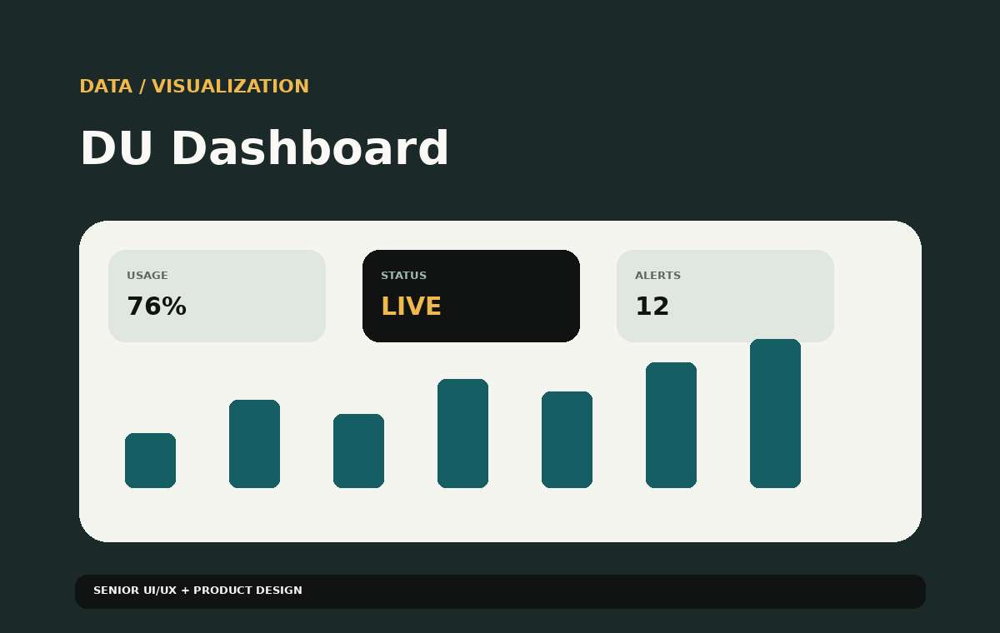
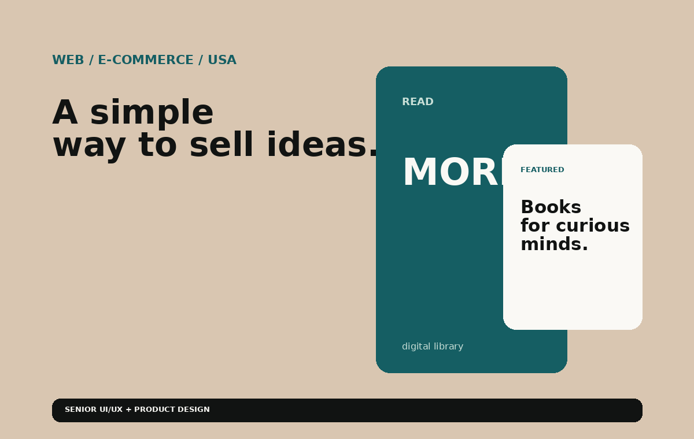
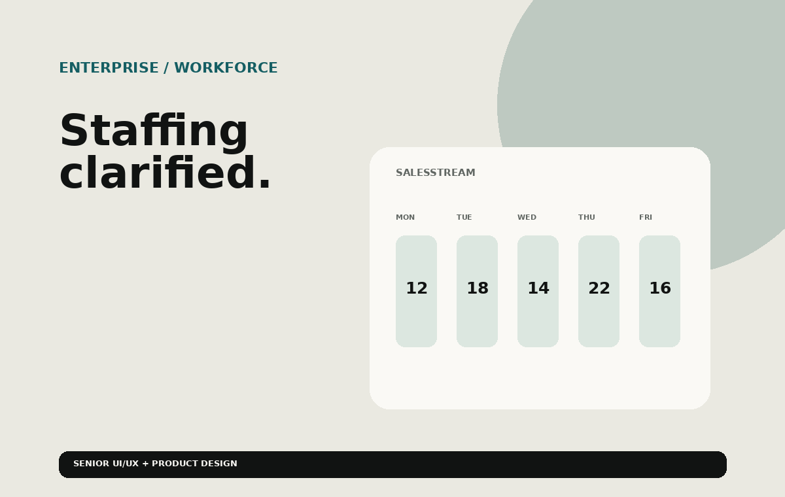

Elderly Care Monitoring System
Designed a user-centered web and mobile experience that makes care-monitoring information clearer and easier to act on.

Industrial Energy Monitoring
A clean enterprise dashboard for monitoring electricity consumption across large industrial machinery and turning complex data into clear actions.

AI-Driven Information Tool
Designed a focused AI experience that simplifies information discovery, organization and interaction without adding cognitive overload.

DPM Connector
Smart-meter Wi-Fi provisioning experience designed to simplify device setup and reduce friction in a technical onboarding flow.

DU Dashboard
Visualization-focused dashboard experience designed to surface key metrics and make complex data easier to monitor and interpret.

E-Book E-Commerce Platform
Designed and developed a WordPress-based e-commerce experience with a practical, cost-conscious implementation strategy.

SalesStream Staffing Manager
Enterprise staffing-management experience designed to organize workflows, improve visibility and make resource information easier to manage.
VISUAL COMMUNICATION
Graphic Design & Brand Identity
Sample case-study structures for branding, print collateral, promotional design and campaign creative. Replace the sample artwork and links with your original projects.
StudioIDENTITY · 2026
Brand Identity & Visual System
Logo exploration, colour palette, typography, brand rules and a consistent visual identity across touchpoints.
MATTER.CAMPAIGN / PRINT
Marketing & Print Collateral
Leaflets, brochures, posters, business collateral and production-ready print layouts designed around a clear message.
Digital Graphics & Social Creatives
Social media graphics, digital advertisements, promotional artwork and campaign assets adapted for multiple formats.
CAMPAIGNS · SEO · PERFORMANCE
Digital Marketing
Sample campaign case studies and a visual gallery area for your own ads, social posts and campaign graphics. Performance figures are intentionally omitted until you add verified results.
the right
audience.
Paid Search & Social Ads
Campaign planning, audience targeting, ad creative, keyword alignment and iterative optimisation across Google Ads and Meta Ads.
Be useful.
SEO & Website Optimisation
Search intent, on-page SEO, content structure, metadata, technical checks and ongoing optimisation opportunities.
Social Media Management & Campaigns
Content planning, creative production, publishing calendars and coordinated social campaigns across channels.
YOUR CREATIVE WORK
Digital Marketing Graphics Gallery
Replace these sample tiles with your original campaign graphics.
moment count.AD CREATIVE · 01
action.SOCIAL · 02
stand out.CAMPAIGN · 03
perspective.PAID SOCIAL · 04
WEB DESIGN · FRONT-END
Website Design & Development
Sample case studies covering responsive website design, front-end implementation and CMS-powered websites. Replace sample links with your live sites or prototypes.
experiences.
Responsive HTML & CSS Website
Responsive page structure, reusable layouts, accessible content hierarchy and mobile-first styling using HTML, CSS and Bootstrap.
simple.
WordPress Business Website
Website design, theme customisation, content updates, responsive page building and ongoing site maintenance using WordPress.
every screen.
Bootstrap Landing Page
Reusable responsive components, grid layouts, navigation patterns and front-end implementation with HTML, CSS and Bootstrap.